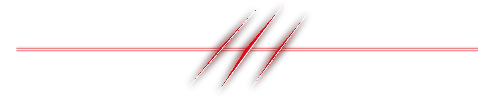

LIVE MARKET DATA
FOR YOUR AI AGENT
A Model Context Protocol server for Indian equities. Live NSE and BSE quotes, 57 technical indicators, 54 fundamental ratios and a stock screener — over plain MCP stdio, from three free public sources.
npx -y @aswathas/trademcp

Live tick ▸ —Live analysis panel
LIVE · RELIANCE INDUSTRIES · NSESnapshot captured 21 Oct 2026, 03:20 IST from Yahoo Finance, NSE archives and Screener.in.
Developer Paste one config block. The agent gets the tools.
Trader Every ratio is computed from raw statement lines, not scraped off a screen.
- 14tools
- 57technical indicators
- 54fundamental ratios
- 3free data sources
- 0API keys
The same numbers, live in this tab
Cursed chart & screener filter Infinite convergence chart Live chart & screener filter
These candles come from the TradeMCP server right now, and the indicators below are recomputed in your browser from the same raw series. Type any NSE symbol and press Enter.
Filter 50 real NIFTY constituents
Every row was pulled by trademcp_screen_stocks and
trademcp_compare_stocks — the same tools your agent calls. The filters below
apply the same predicates the server applies, and the panel prints the exact call.
Click any row to load that symbol into the live board above.
14 tools, 64 parameters
Every tool runs over plain MCP stdio. Open a card to read its parameters — the front stays scannable, the detail lives on the back.
01trademcp_get_quote
Latest price quote and key statistics for an Indian stock.
- symbol required
- string — NSE symbol or company name, e.g.
RELIANCEortata motors - exchange
- string —
NSEorBSE - response_format
markdownorjson
02trademcp_get_fundamentals
A full fundamental picture: valuation, profitability, leverage, liquidity, growth and DuPont.
- symbol required
- string — NSE symbol or company name, e.g.
HDFCBANK - include_india_metrics
- boolean — add India-specific ratios from Screener.in
- response_format
markdownorjson
03trademcp_get_valuation
A focused valuation sheet, optionally against a peer set from the same NSE industry.
- symbol required
- string — e.g.
BAJFINANCE - peers
- boolean — also fetch a small peer set for comparison
- response_format
markdownorjson
04trademcp_get_financial_statements
Income statement, balance sheet and cash flow line items.
- symbol required
- string — e.g.
SBIN - period
- string —
annualorquarterly - years
- integer — how many periods to include (1–10)
- response_format
markdownorjson
05trademcp_get_price_history
Historical OHLCV candles for an Indian stock.
- symbol required
- string — e.g.
INFY - range
- string —
1mo,3mo,6mo,1y,2y,5y,10y,ytd,max - interval
- string —
1d,1wk,1mo,1h,30m,15m,5m - limit
- integer — maximum candles (1–500)
- exchange
- string —
NSEorBSE - response_format
markdownorjson
06trademcp_get_technical_indicators
Compute any of the 57 technical indicators, computed in pure Python.
- symbol required
- string — e.g.
RELIANCE - indicators
- array — e.g.
['rsi_14','macd','atr_14']; omit for all - range
- string —
3mo,6mo,1y,2y,5y - interval
- string —
1d,1wk,1h,30m - limit
- integer — recent points kept per indicator (1–100)
- response_format
markdownorjson
07trademcp_get_technical_analysis
Full technical analysis with a directional read, risk statistics and recent candlestick patterns.
- symbol required
- string — e.g.
INFY - range
- string —
6mo,1y,2y,5y - benchmark
- string —
NIFTY 50orSENSEXfor beta and relative strength - response_format
markdownorjson
08trademcp_get_support_resistance
Support and resistance levels computed from swing structure.
- symbol required
- string — e.g.
TCS - range
- string —
6mo,1y,2y,5y - response_format
markdownorjson
09trademcp_screen_stocks
Screen Indian stocks by fundamental and technical criteria. NIFTY 50 in 8.8 s cold, 3.6 s warm.
- universe
- string —
NIFTY 50,NIFTY 100,NIFTY 500orNSE - min_pe / max_pe
- number — P/E bounds
- min_roe
- number — return on equity (%)
- min_roce
- number — return on capital employed (%)
- min_net_margin
- number — net profit margin (%)
- max_debt_to_equity
- number — leverage ceiling
- min_market_cap
- number — in rupees
- min_dividend_yield
- number — (%)
- min_current_ratio
- number — liquidity floor
- min_revenue_cagr
- number — 3-year revenue CAGR (%)
- rsi_below / rsi_above
- number — oversold and overbought screens
- above_sma50 / above_sma200
- boolean — trend filters
- limit
- integer — maximum stocks returned (1–100)
- sort_by
- string —
market_cap,pe_ratio,roe_pct,health_scoreand more - sort_order
- string —
descorasc - response_format
markdownorjson
10trademcp_compare_stocks
Compare two to five Indian stocks across price, valuation, quality and momentum.
- symbols required
- array — two to five NSE symbols or company names
- response_format
markdownorjson
11trademcp_analyze_portfolio
Analyse an Indian equity portfolio: weights, P&L, concentration risk and per-position technicals.
- holdings required
- array — e.g.
[{'symbol':'RELIANCE','quantity':10,'cost_price':1200}] - benchmark
- string —
NIFTY 50orSENSEX - response_format
markdownorjson
12trademcp_get_index_snapshot
Live quotes for 15 major Indian indices.
- indices
- array — e.g.
['NIFTY 50','SENSEX','NIFTY BANK']; omit for the default set - response_format
markdownorjson
13trademcp_get_market_breadth
Measure market breadth for an Indian index across its constituents.
- index
- string —
NIFTY 50orNIFTY 100 - include_trend
- boolean — also count constituents above their 200-day average (slower)
- response_format
markdownorjson
14trademcp_search_symbol
Search NSE-listed companies by ticker symbol or company name.
- query required
- string — e.g.
RELIANCE,tata,bank of baroda - limit
- integer — maximum results (1–50)
- response_format
markdownorjson
57 indicators. 54 ratios. 18 candlestick patterns.
No pandas, no numpy, no yfinance. Every indicator is computed in pure Python, and every ratio is derived locally from raw statement lines.
Indicators
Ratios
And more
- 18 candlestick patterns, 5 pivot point styles
- DuPont identity, reconciled end to end
- 0–100 health score with a per-metric breakdown
- Sharpe, Sortino, max drawdown, beta, alpha
- ROCE, promoter / FII / DII holding, debtor days
- 15 indices, from NIFTY 50 to INDIA VIX
Five steps, then it caches
-
1
Resolve
RELIANCE,tata motors,NSE:TCS,RELIANCE.NS,INE002A01018andniftyall resolve to the same instrument. -
2
Fetch
Prices from Yahoo's chart endpoint, statements from its timeseries endpoint, symbol identity from NSE's static CSV listings.
-
3
Compute
Each ratio is derived from raw statement lines, so valuation, profitability and leverage reconcile with each other and with DuPont.
-
4
Score
Indicators become signals, signals become a composite score from Strong Buy to Strong Sell, explained in plain language.
-
5
Cache
Responses are cached on disk with per-type TTLs, so repeated screens stay off the free endpoints and stay fast.
Three sources. All free. All keyless.
If a source changes its markup, that one section degrades. The rest keeps working.
Yahoo Finance
Chart, quote and fundamentals-timeseries. Public JSON endpoints; the quote endpoint needs a free cookie and crumb handshake, which the server does itself.
- OHLCV candles, 52-week range
- Price, market cap, multiples, dividend yield
- Annual, quarterly and trailing statement lines
NSE static archives
Symbol universe, company names, ISIN, industry and index membership, from static CSV listings that need no session.
- NIFTY 50 / 100 / 500 listings
- Full listed-company equity universe
- Not behind the bot protection on the live JSON API
Screener.in
India-specific ratios and ownership, parsed defensively and treated as optional.
- ROCE and book value, on Screener's own definition
- Promoter, FII, DII and public holding
- Debtor days, inventory days, cash conversion cycle
TradeMCP reports ROCE as EBIT ÷ invested capital. Screener.in reports its own ROCE on a different capital base. Both are shown; they are never merged.
One command, then restart your client
One command installs the server and hands it to your client. No key, no signup, no dashboard.
npx -y @aswathas/trademcp
That is the whole install. The package carries the Python server and builds its own environment on first run, so all you need is Node 18+ and Python 3.11+. No clone, no venv, no pip. The first run spends about half a minute building that environment; every run after that is about a second.
npm i -g @aswathas/trademcp
If your MCP client has a short start-up timeout, install the
package once like this and point the client at the trademcp command
instead of npx. The environment is built at install time, so the server
starts in about a second.
{
"mcpServers": {
"trademcp": {
"command": "npx",
"args": ["-y", "@aswathas/trademcp"]
}
}
}
For Claude Desktop, Cursor, Windsurf and VS Code. In Claude Code
it is a single line: claude mcp add trademcp -- npx -y @aswathas/trademcp.
{
"mcpServers": {
"trademcp": {
"command": "python",
"args": ["-m", "trademcp"]
}
}
}
If you installed from source and want to point at your own
interpreter, use this instead: git clone, python -m venv .venv,
pip install -e ., then python -m trademcp.
python must be the interpreter that has TradeMCP installed —
scripts/install.ps1 prints the exact path to paste. Installed globally
instead? Use "command": "trademcp" with no args.
-
1
Install
npx -y @aswathas/trademcp
Or from source: clone,
python -m venv .venv,pip install -e ., thenpython -m trademcp. -
2
Verify it works
python scripts/verify_all_tools.py python -m pytest tests -q
70 offline unit tests, plus a live call against every one of the 14 tools.
-
3
Ask your agent
“What is the technical score on TCS over one year, and is it above its 200-day average?”
Every setting has a default
| Variable | Default | Purpose |
|---|---|---|
TRADEMCP_TIMEOUT | 30 | Request timeout in seconds |
TRADEMCP_CACHE_DIR | ~/.cache/trademcp | Disk cache location |
TRADEMCP_QUOTE_TTL | 300 | Quote cache lifetime |
TRADEMCP_PRICE_TTL | 900 | Price history cache lifetime |
TRADEMCP_FUNDAMENTALS_TTL | 21600 | Fundamentals cache lifetime |
TRADEMCP_UNIVERSE_TTL | 43200 | Symbol universe cache lifetime |
TRADEMCP_MAX_CONCURRENCY | 8 | Parallel outbound requests |
TRADEMCP_ENABLE_SCREENER_IN | 1 | Set to 0 to skip Screener.in |